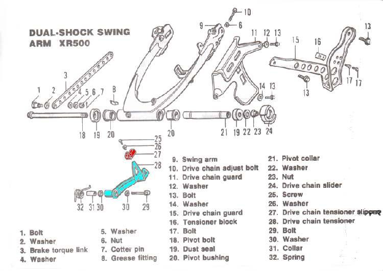

The rear axle has been moved back as far as the adjusters allow, and the chain is still too slack. A chain does not really stretch. Its joints wear and the chain grows longer, which also wears the sprocket teeth. When the adjusters run out, the chain and the sprockets are usually finished.
Is it safe to ride?
Only a short, gentle ride to a workshop. A very worn chain can jump the teeth and lock the wheel, or snap and damage the engine case.
Quick checks first
- Check the axle is not pulled back crookedly. Look at the marks on both sides of the swingarm.
- Check you have the right chain length. A chain with the wrong number of links will run out of adjustment early.
- Look for hooked, thin or pointed teeth on the sprockets.
- Check that the chain has not been shortened before.
Diagnose it step by step
1Was a new chain fitted recently, and is it the right length?
- Yes, and the adjuster ran out soon after: count the links against the maker's figure. A chain with too many links needs correct length. See Identify the size of a drive chain.
- No: go to step 2.
2Pull the chain back from the rear sprocket at its middle. Does it lift off the teeth noticeably?
- Yes: the chain and sprockets are worn. Go to Replace the chain and sprockets.
- No: go to step 3.
3Do the sprocket teeth look hooked, sharp or thin?
- Yes: replace the chain and both sprockets as a set. See Inspect sprockets.
- No: go to step 4.
4Are some chain sections tight and others slack?
- Yes: this is wear. Set slack at the tightest point, then replace the set soon. See Chain is tight in some places and slack in others.
- No: check Check the chain for wear.
Why not just take out a link?
Removing links gives more adjustment but does not cure wear. The worn chain stays weak and keeps wearing the sprockets. Replace the whole set. Never mix a new chain with worn sprockets, or new sprockets with a worn chain.
Causes, most likely first
| Cause | How to confirm | Fix |
|---|---|---|
| Worn chain and sprockets | Chain lifts off rear sprocket, hooked teeth | Replace the chain and sprockets |
| No lubrication for a long time | Dry, rusty, stiff links | Clean and lubricate the chain, then replace the set |
| Wrong chain length | New chain, early end of adjustment | Fit the correct length and joining link (Join a chain) |
| Axle not square | Marks differ left and right | Check and adjust chain slack |